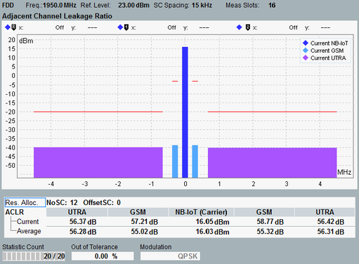

The adjacent channel leakage ratio (ACLR) results are displayed in a diagram and as a table of statistical results.

The diagram shows the mean power in the assigned NB-IoT channel as central bar. The other bars indicate the mean powers in the adjacent GSM channels and in the adjacent UTRA channels. All values are absolute power levels in dBm.
The displayed absolute limit lines are calculated from the configured relative ACLR limits. They are only displayed for adjacent channels with a power level above the configured absolute limit.
The ACLR values resulting from the measured powers are displayed in the table below the diagram. According to 3GPP TS 36.521, the ACLR is defined as the mean power in the assigned NB-IoT channel divided by the mean power in an adjacent channel. The mean power in the assigned NB-IoT channel is also displayed.
The filters used for the ACLR measurement are compliant with 3GPP TS 36.521. According to this specification, ACLR tests must be carried out at maximum output power of the UE.
For the parameters at the bottom, see "Common View Elements".
For query of the ACLR results via remote control, see "ACLR Spectrum Results".